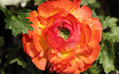

Evergreen Candytuft is a spring blooming favourite, often seen cascading over rocks and walls, or used as a groundcover. The glossy, evergreen foliage forms a billowing mound, with loads of good-sized white flowers for several weeks. Prune lightly right after blooming, but otherwise leave plants alone in fall and early spring. Drought tolerant, once established. Prefers a well-drained site, so avoid heavy clay soils that stay wet in winter. Not easily divided.

Persian Buttercup
Persian Buttercups are frost tender perennial tubers that are only hardy in zones 8-10,
so they are most often grown as annuals. They provide a continuing display of beautiful 3"-5" Camellia-like flowers atop branched, 8"-18" stems, from late spring through mid summer.
They are well suited plants for growing in containers.